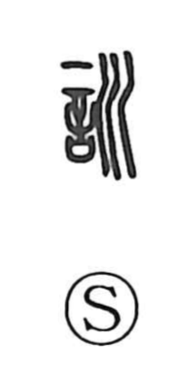

訓

Uncategorized
Kun: | On: kun
instruction ・ to teach ・ to guide ・ admonition ・ reading ・ explanation
Explanation
A phono-semantic character: 言 “speech” provides the sense, while 川 serves as the phonetic element, a value it also carries in characters like 順. In early usage, 訓 could even be written in place of 順, showing their shared phonetic base. Shirakawa traces the word to ancient rites for the earth deity, where solemn, purifying formulas were recited to soothe the spirit of the land, under the belief in the efficacy of utterance—the spirit of words that realizes what it declares. From these ritual recitations, the character’s meaning broadened to the human realm: to teach, guide, and admonish, and later to the act of reading and expounding a text.